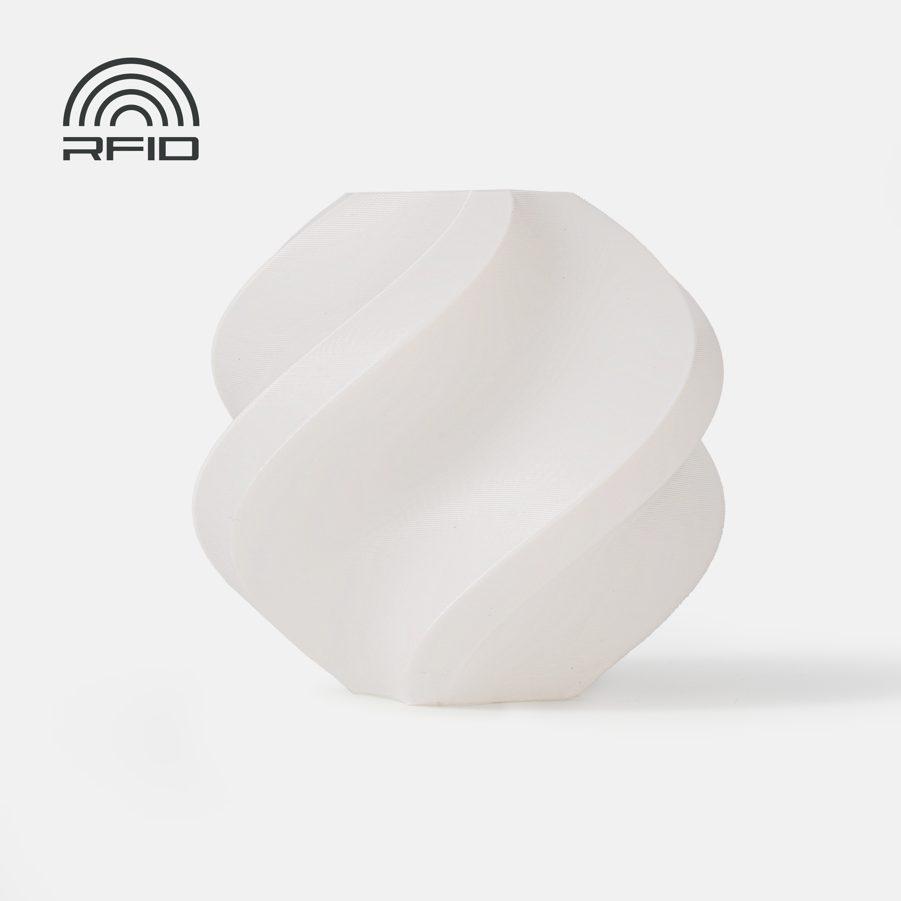

Exterior
ASA
ASA se suele ver como la versión más lógica de ABS para exterior. Mantiene perfil técnico, pero mejora claramente el comportamiento frente a radiación UV y envejecimiento al aire libre.

Resumen rápido
Dificultad
Media a alta, muy parecida a ABS en exigencia de entorno.
Uso típico
Piezas de exterior, soportes expuestos al sol, carcasas y accesorios para jardín o vehículo.
Punto fuerte
Mejor resistencia UV y clima que ABS.
Punto débil
Sigue siendo un material con warping y necesidad de buena ventilación.
Qué es
ASA es un polímero técnico cercano en sensaciones de impresión a ABS, pero orientado a aplicaciones donde el exterior y la intemperie importan de verdad.
Tipos y variantes de ASA
No todos los ASA se comportan igual. La base común es la resistencia a intemperie, pero cada fabricante ajusta fluidez, contracción, acabado y temperatura de trabajo.
ASA estándar
La opción general para piezas de exterior. Buen equilibrio entre rigidez, resistencia UV y temperatura, pero exige cama caliente y entorno estable.
ASA fácil
Blends formulados para reducir warping y facilitar la impresión en máquinas menos industriales. Suelen sacrificar algo de temperatura o rigidez frente a ASA más puro.
ASA-CF
ASA reforzado con fibra de carbono. Aumenta rigidez y acabado mate, reduce deformación visual, pero necesita boquilla endurecida y no siempre mejora impacto.
ASA industrial
Formulaciones orientadas a piezas expuestas, carcasas técnicas y entornos exigentes. Conviene mirar ficha técnica, temperatura HDT y recomendaciones de cámara.
Temperaturas orientativas
| Parámetro | Rango habitual | Comentario |
|---|---|---|
| Boquilla | 245-265 °C | Depende de velocidad, boquilla y formulación. |
| Cama | 90-110 °C | Mantener base firme es importante. |
| Ventilación | Baja | Evita enfriar demasiado la pieza. |
| Cámara cerrada | Muy recomendable | Especialmente en piezas grandes o con esquinas largas. |
Compatibilidad y hardware
- Mucho mejor en impresoras cerradas o con recinto estable.
- Necesita gestión seria de ventilación del entorno, no solo del ventilador de capa.
- No suele exigir boquilla endurecida si no lleva cargas abrasivas.
Perfil base recomendado
Para empezar, usa velocidad moderada, perímetros suficientes y una primera capa lenta. En ASA importa más mantener la pieza caliente de forma uniforme que perseguir una velocidad alta.
| Ajuste | Punto de partida | Por qué importa |
|---|---|---|
| Primera capa | 15-30 mm/s | Da tiempo a que el material moje la superficie. |
| Ventilador | 0-20% | Demasiado aire genera grietas y mala unión. |
| Brim | 5-10 mm | Ayuda en esquinas y piezas largas. |
| Puerta/caja | Cerrada | Reduce corrientes y cambios bruscos. |
Humedad y seguridad
No es el material más problemático por agua, pero sí pide entorno limpio, estable y ventilado. Los humos importan y hay que tratarlos con más seriedad que con PLA.
Ventajas
- Mejor comportamiento a la intemperie que ABS.
- Buen equilibrio entre rigidez, resistencia térmica y durabilidad exterior.
- Muy útil para piezas expuestas al sol donde PLA y PETG se quedan cortos.
Límites
- Imprime peor que PETG en una máquina abierta.
- No es un material de entrada.
- Puede agrietarse o despegarse si el entorno no está controlado.
Usos recomendados
Cuando la palabra clave es “exterior”, ASA suele ser una respuesta mucho más seria que PLA o ABS.
Problemas típicos
Comparte gran parte de los males del ABS: warping, delaminación, grietas y alta sensibilidad a corrientes de aire.
Diagnóstico rápido
- Si se levantan las esquinas, revisa limpieza de cama, temperatura real, brim y corrientes de aire.
- Si aparecen grietas entre capas, baja ventilación y mejora el cerramiento.
- Si la pieza huele mucho o irrita, mejora ventilación ambiental y evita imprimirlo en estancias habitadas.
- Si el acabado sale rugoso, revisa humedad, temperatura de boquilla y flujo.
ASA en una Bambu A1
En una A1 abierta tiene sentido solo en piezas pequeñas, controladas y asumiendo limitaciones. Si tu objetivo principal es ASA, una máquina cerrada está más alineada con el material.
Cuándo elegirlo y cuándo no
Elige ASA si la pieza va a vivir en exterior o cerca de calor moderado y necesitas estabilidad mejor que PLA o PETG.
No lo elijas si tu prioridad es facilidad de impresión o si tu máquina es abierta y aún estás aprendiendo fundamentos.
Utilidad de la página